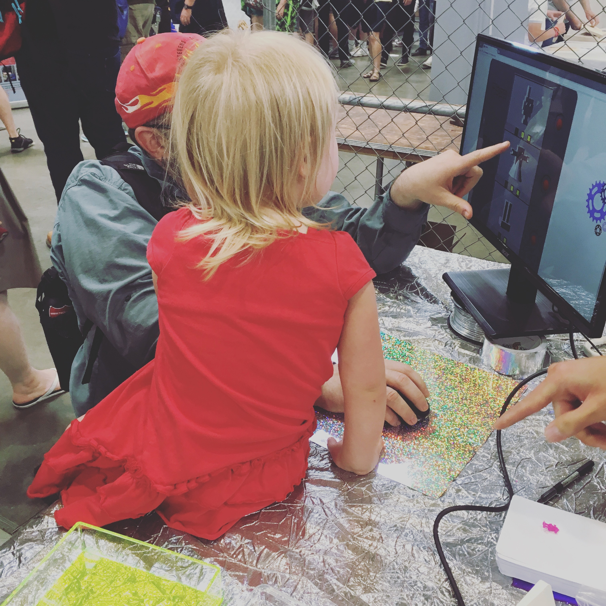
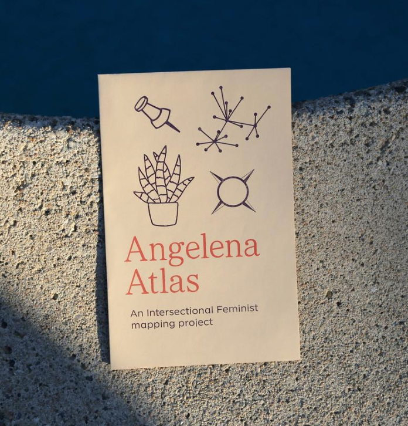
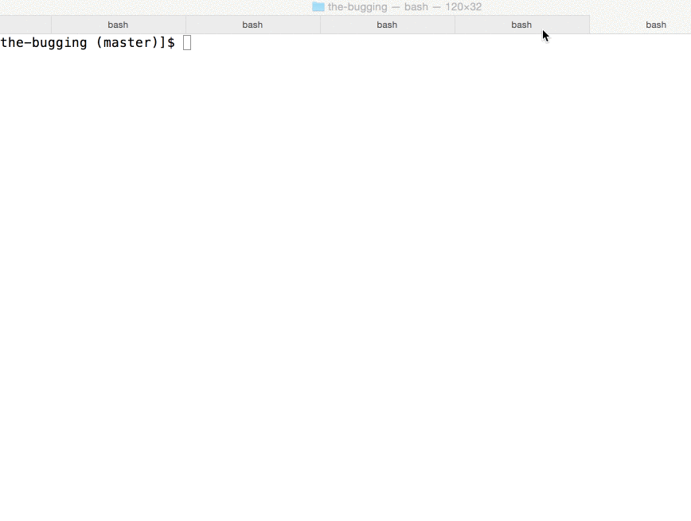
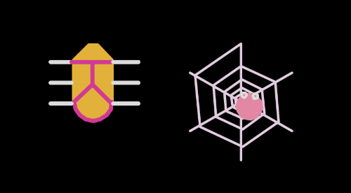

Bit-z-Bots is a web application for customizing and creating miniature 3D-printed robot figurines.
Cute and unassuming, a Bit-z-Bot's noble purpose in its 3D-fabricated life is to inspire children's (and adults'!) interest
in creative technology.
Bit-z-Bots has been remade in iterations, culminating in an exhibition at
Maker Faire SF 2017, where children designed and 3D-printed their figurines.

Children are impressionable, and toys are an effective medium for education, so for my first programming
project, I wanted to create something that encouraged all kids' interest in technology, and especially empowered little girls to
make their own figurines.
Original Tech Stack: Python, Flask, JavaScript, HTML5, Jinja, CSS3, SQLite3, Bootstrap, JQuery, OpenSCAD,
i.materialise 3D Print Lab Connection API
Current Tech Stack: Angular, HTML, CSS, Bootstrap, Firebase
Angelena Atlas, founded by Leana Scott and built by women, is a crowdsourced map of intersectional
feminist resources and spaces in Los Angeles. I am contributing web development and skillsharing with other members of the
Women's Center for Creative Work to create a sustainable and empowering application. We hope to make various social justice
activism efforts (e.g. anti-racism, anti-incarceration, pro-LGBTQIA2S+) more visible and thus accessible to members of our community.

Postscripta is a text-to-handwriting application that uses my dad's handwriting post-developing MS for easier, personalized
assistive electronic communication. Typing and other electronic forms of communication are easiest for people with neurodegenerative disorder
based motor impairment to use, but often de-personalized for functionality.
The potential applications of Postscripta go beyond re-personalization of assistance for those affected by neurodegenerative disorders.
Postscripta in future iterations could be used for preservation and celebration of anything, for instance, to make font for modern-day
recipe cards out of a great-grandmother’s handwriting.
Original Tech Stack: Angular, HTML, CSS, Python, Flask. The handwriting sampled is my dad's own since developing MS, the unique characteristics of which demonstrate the resilience of the human nervous system.
Magic Neural Net is a simple, JavaScript composed neural network acting as a Magic 8-Ball to lend
pseudo-random, yet by definition 'intelligent', fortunes. The net utilizes a random input of combinations involving 0 and/or 1 to solve the XOR equation, which is used to determine whether
two inputs differ. Interestingly, the classic Magic 8-Ball already has 'edge case' fortunes built in, which are used as fallback answers in case the code
encounters a runtime issue.
If the inputs differ, the network yields an output close to 1, which I mapped to yield a binary result of good (closer to 1) or bad fortune (closer to 0).
This is a playful exercise in training a neural network and applying sophisticated, intelligent code to a basically meaningless end, mimicking a Magic 8-Ball, which does not actually use
input about your situation to intelligently predict fortune.
Programmers spend enough time debugging. The Bugging is a playful exercise for the programmer to practice and solidify her
knowledge in object-oriented programming (OOP) while creating colorful "bugs". The Bugging involves algorithmically generating
bugs with randomly selected, inheritable attributes (e.g. wing/eye color, pattern, body detail, number of legs) and methods
(e.g. movement, size growth). The project will eventually implement Mendelian genetics principles in algorithms to dictate
offsprings' inheritance of said bug qualities.

The original The Bugging playfully employs Python's Turtle module, which is traditionally used to teach OOP, by imagining
a digital turtle has attributes of position, direction and shape, and methods of movement. It drags its tail (which is
dipped in colorful paint) across the computer screen, to the programmer's (or program's) whim.

The Bugging has classes of bugs including "Scarab", "Lady", "Snail" and "Widow" which live in a digital world where their
attributes can be inherited by hybrid offspring. A side effect of the practical exercise, The Bugging, is beautiful
randomized, algorithmically generated art that--if not screencast---lasts in ephemerality, mimicking the often short
lifespans of insects.